Meet the Sisters
Our Sisters
Read about each of our current Active Sisters!
Aaron Roth
Hello! My name is Aaron Roth, and I am a Chemistry Education Major from Avon, Indiana. I play Baritone in the Purdue All-American Marching Band. I am also involved in the Boiler Book Club. I love to read, play video games, and watch TV. I am also an Eagle Scout out of Troop 307. I also love to make music, as well as write my own pieces. So far, I have made a handful of my own compositions as well as several covers of music or VGMs. I am excited to be a part of TBS! |
Adam Beaver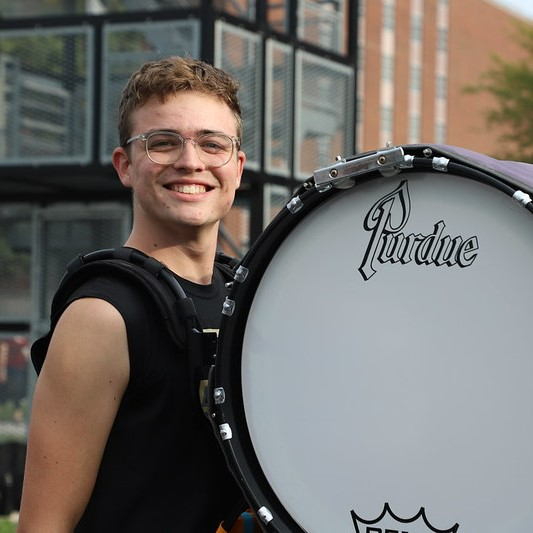Adam is a senior pursuing a degree in Environmental and Ecological Engineering, with a minor in Environmental Policy and Politics. He plays bass 7 in the "All-American" Marching Band Drumline and also takes part in concert band and percussion ensemble in the spring. Within TBS, Adam is the Vice President of Operations. Outside of PBO, Adam enjoys being outdoors, spending quality time with friends and family, and just having fun! He is excited for what his senior year will bring and can't wait to see what bigger and better things the Beta Sigma chapter can do. |
Aden Sinks
Aden is a junior from Delphi, IN studying Acoustical Engineering at Purdue. He is in The Highlighters Membership Class and the Spice Rack family. He is a third-year member of the “All-American” Marching Band and a student leader in the clarinet section! Outside of college, Aden enjoys hanging out with friends, practicing his clarinet, and watching F1 racing. |
Anna Nierzwick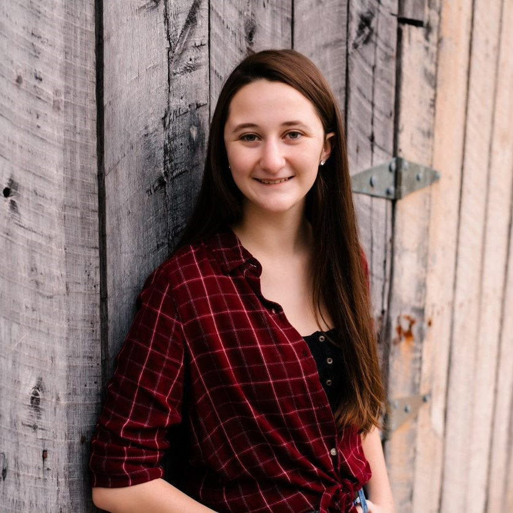Anna is a sophomore studying applied mathematics at Purdue. She is from Brownsburg Indiana. She is a member of the Fruit Salad (Yummy Yummy) class and the Velvet Bowtie family. She plays clarinet in the All American Marching Band and bass clarinet in concert band. She enjoys hanging out with friends, watching bad movies and listening to music. |
Bailey Feller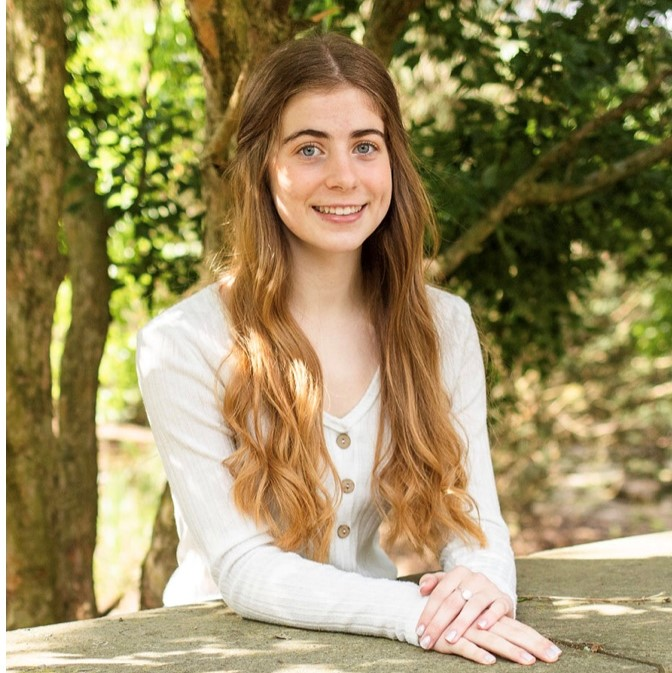Bailey is a sophomore studying Chemical Engineering from Cincinnati, OH. She is a member of the Fruit Salad (Yummy Yummy) Membership Class and a Blue Celestial. She is a clarinetist and a member of the Purdue All American Marching Band. Outside of school, Bailey loves watching Spanish Soap Operas and spending time with friends and family. |
Belle Vasquez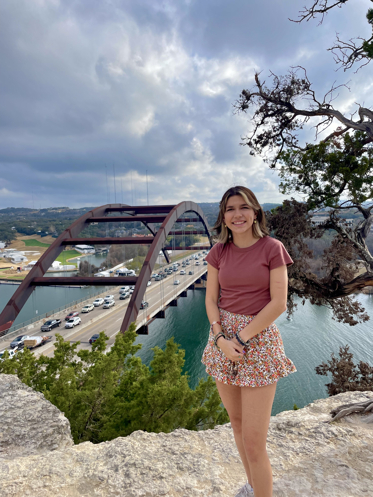Belle Vasquez is a sophomore studying Aeronautical and Astronautical Engineering at Purdue University from Austin, Texas. They are a member of the Fruit Salad (yummy, yummy) class and is a part of the Daisy family. They are a baritone in Purdue’s “All-American” Marching Band. They are also heavily involved in the Active Controls Team in the Purdue Space Program in the Structures and Propulsion Sub-team. Belle also enjoys spending time with friends and family, painting, jamming out to music, and playing with her cat. |
Bri Lantz
Bri is a sophomore studying Creative Writing and Communications from Shippensburg, PA. She plays baritone saxophone and is currently in University Band. On campus, she is a part of Wiley Radio, where she hosts her own show and helps with social media for the club. Outside of school, she enjoys going to the gym and hanging out with friends. |
Caterina Oliverio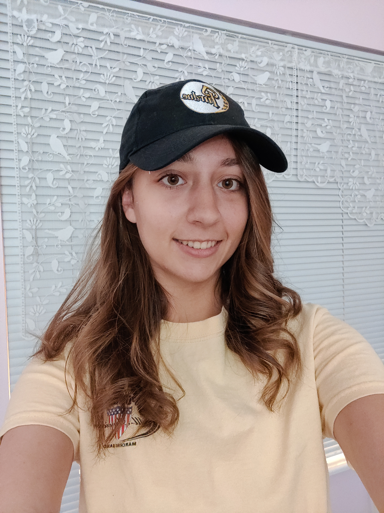Caterina is a sophomore from Cincinnati, Ohio studying Mechanical Engineering. She is a part of the Fruit Salad (yummy yummy) membership class and the Blue Celestial family and is the current Webmaster for our chapter. She plays the clarinet for the Purdue BOX Band, GABS, and The All-American Marching Band. She is also a member of the VMT clothing team and the Tau Beta Sigma Services Committee. Outside of school, Caterina enjoys music, sketching, painting, and watching soccer. |
Colin Mast
Colin is a sophomore from Chagrin Falls, OH studying Electrical and Computer Engineering Technology at Purdue. He is a member of the Fruit Salad (Yummy Yummy) membership class and the Spice Rack family. He is a trombonist, currently playing in Jazz Lab Band I. Outside of music he enjoys anything outdoors related, and going on adventures with friends. |
Cynth Rossi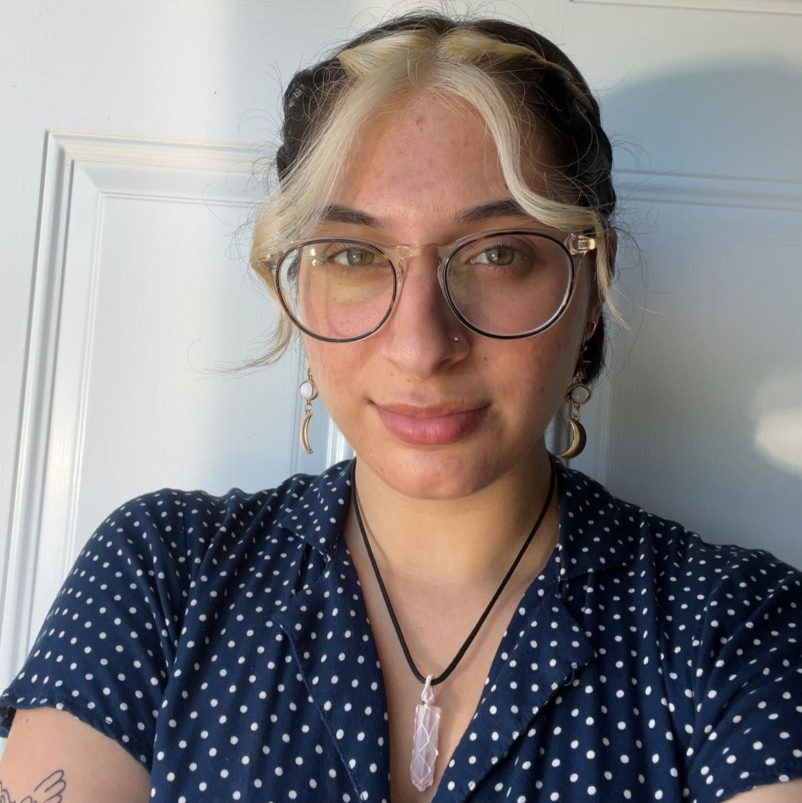Cynth Rossi is a sophomore majoring in Theatre and minoring in Sociology and LGBTQ+ Studies. They are a vocalist with the jazz bands and a member of the IDEA VMT. Cynth is part of the membership class Fruit Salad (yummy, yummy). Outside of serving the band, they are involved in the Boiler Success Team - Student Advisory Board and work as an intern in the Office of the Registrar. Cynth also enjoys baking, writing music, and spending time with friends! |
David Moore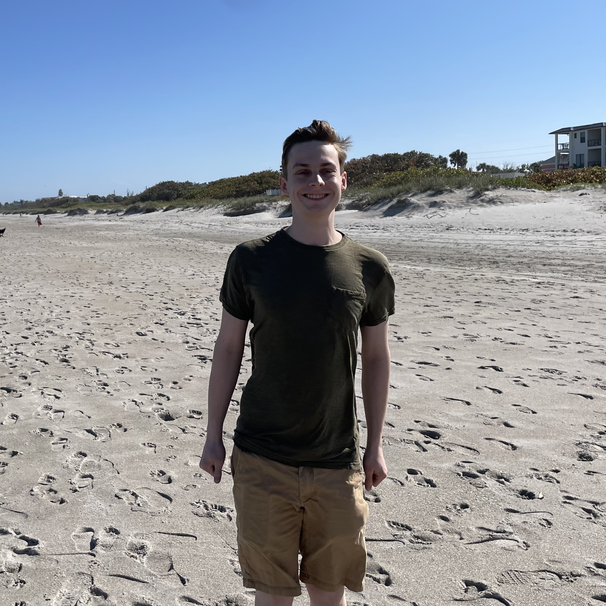David is currently a Junior at Purdue University double majoring in Planetary Sciences and Biology from Highland Park, Illinois. He plans to study Astrobiology in Graduate school. David plays baritone in boiler box band, GABS and in indoor ensembles. He is also a member of the OPS, library and supply VMTs. David is a member of the Haiku* class and a member of the mixed nut family. In his free time, David enjoys travelling, reading and spending time outdoors. |
Ellie Gauthier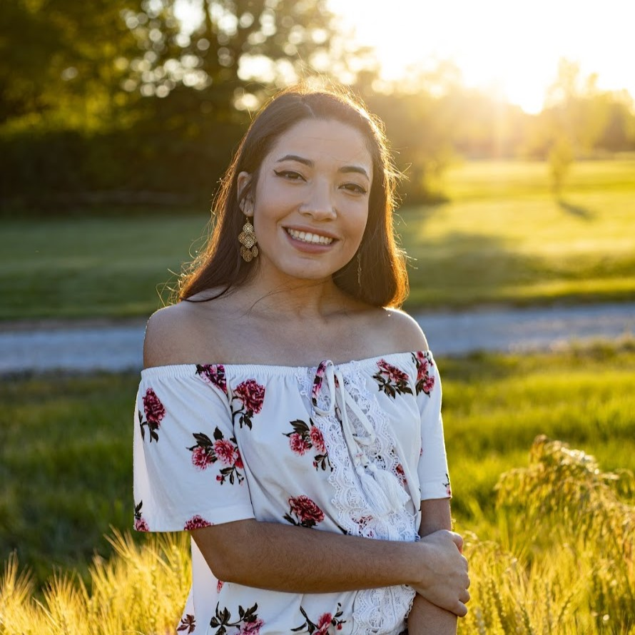Ellie is a junior from New Palestine, Indiana studying Electrical Engineering. She is part of the Haiku* membership class and the Daisy family. She plays piccolo in the All-American Marching band and flute in concert band. Outside of band, Ellie enjoys playing video games and reading. |
Emily Jones
Emily is a senior studying Actuarial Science and Applied Statistics and minoring in management at Purdue from Hope, IN. She is a member of the Highlighters Membership Class, the Velvet Bowties family, and the membership committee. She is a clarinetist in the Concert Band. She is also a member of the student life VMT. After graduating, she plans to work in the insurance industry. Outside of school, Emily enjoys hanging out with her friends, watching movies, and spending time outside. |
Emma Laplante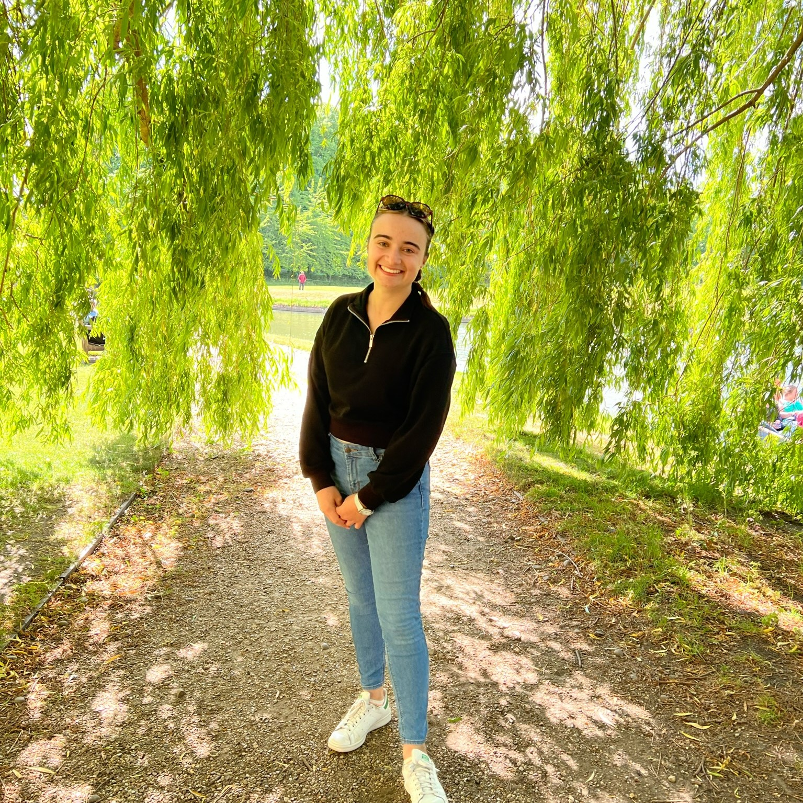Emma is a senior studying Nursing at Purdue from Seattle, WA. She is a member of the Fruit Salad (Yummy Yummy) membership class and is in the Cowbell family. She plays the clarinet in the "All American" Marching Band and the Boiler Box Band. She's also a member of the Supply Volunteer Management Team. On campus, she is an Exploratory Studies Ambassador and she works for the Office of Admissions (walking backwards and shouting campus facts into a microphone). Outside of school, Emma enjoys travelling, getting lost on public transit, and spending time with her friends and family! |
Ethan RichardEthan is a sophomore from Avon, Indiana studying Industrial Engineering Technology. He is a part of the Daisy family as well as a member of the Haiku* 2023 candidate class. Ethan plays clarinet in both the AAMB and concert bands. Outside of academics, he loves to read, play video games, listen to music, and make crafts. |
Eve FrankEve is a sophomore studying Psychological Science with a minor in Human Development and Family Studies from Columbus, OH. She apart of the Fruit Salad (yummy yummy) candidate class and is from the Mohtin Goat family. In band, Eve plays flute in concert band, piccolo in Box Band and she carries the Ohio State flag in the AAMB. After graduation Eve hopes to become a clinical psychologist. Outside of school Eve likes to read, hang out with friends, and watch soccer. |
Grace Rode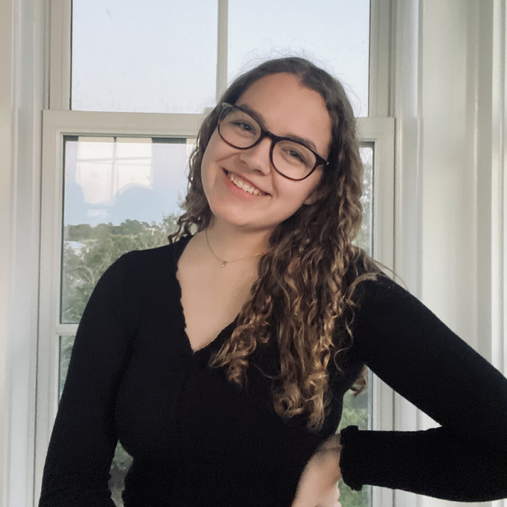Grace is a sophomore pursuing a degree in Cybersecurity, with minors in Accounting and Global Studies. She plays the clarinet in varisty band and is a member of the Haiku* class. She is also involved with Purdue University Dance Marathon and Women in Cybersecurity. Outside of school, she enjoys reading and hanging out with friends. |
Grant Larsen
Grant is a junior from Bloomington, IL majoring in Computer Science. He plays the bass clarinet in Purdue's Wind Ensemble, is a member of the Haiku* class, and in the Velvet Bowties family. Outside of academics, he enjoys playing guitar, video games, and board games with friends. |
Isaak Gutierrez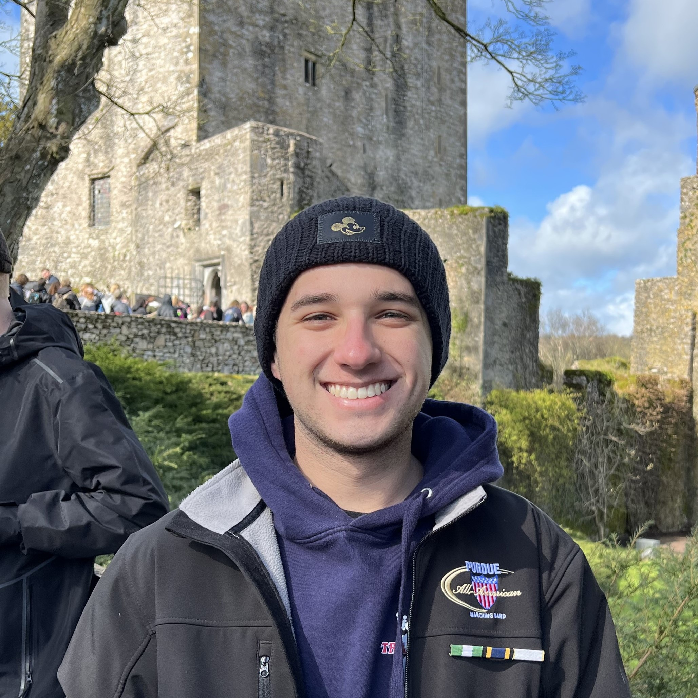Isaak is a freshman from Pembroke Pines, Florida, and is currently in the FYE program. He is a member of the Haiku* 2023 candidate class and is in the Spice Rack family. He is a member of the AAMB, marching the Wisconsin Flag in for the Big 10 Flag section, and plays Oboe in the Purdue Wind Ensemble. After Purdue, he would like to pursue a career in thrill rides and theme park creation! His favorite roller coaster is Fury 325 at Carowinds in North Carolina! |
Jenna Hans
Jenna is a junior studying Biological Engineering with a concentration in Cellular and Biomolecular Engineering with a minor in Biotechnology. She is from Greenwood, Indiana. She is a part of the Fruit Salad (Yummy Yummy) membership class (Spr ‘22) and the Daisy family. Jenna plays the clarinet in the AAMB, Symphonic Band, Boiler Box Band, and GABS. After graduating, she hopes to work with a pharmaceutical company on improving medication efficacy and accessibility. Outside of college, Jenna likes to bake and play video games, has way too many keychains, and enjoys theorizing about theme park lore. Many Cedar Fair properties contain little nods to each other, if you have a keen eye! Mystic Timbers at Kings Island contains references to Steel Vengeance at Cedar Point, which- |
John Danison
John is a freshman in Computer Engineering Technology with minors in Computer Science and Communications, Networking and Information Technology from Oswego, Illinois. He plays clarinet in the "All-American" Marching Band and Wind Ensemble. He is a member of the Haiku* class and is a Blue Celestial. Outside of school, John enjoys playing soccer, learning about space, and playing videogames with friends. |
Julie Barber
Julie is a freshman from Indianapolis, Indiana studying Natural Resources and Environmental Science. She is in the Haiku* class and in the Velvet Bow ties family. She plays the clarinet and is a member of the library VMT team. Outside of school, Julie enjoys going to the gym, playing tennis, swimming, and going on hikes outdoors. |
Kassandra Lopez Carrillo
Kassandra is a sophomore from Frankfort, IN majoring in UX Design with minors in Psychology and Art+Design. She's part of the haiku* membership class and the Pink Rose family. She also plays piccolo in the AAMB, Boiler Brass and Box Band, and flute in Campus Band. Outside of PBO, Kassandra enjoys reading, writing, photography, hanging out with friends and traveling. |
Krupa Patel
Krupa is a senior studying Psychological Sciences at Purdue. She is also pursuing a minor in Human Development and Family Services. She is from Plainfield, IN. She is a member of The Highlighters and is part of the Motin Goat Family. She plays the Flute/Piccolo, and currently in the All American Marching Band, as well as Gold and Black Sound. After graduating, Krupa plans on going to graduate school to continue her education. Outside of school, Krupa loves spending time with friends and playing with her cat. |
Macaylee Allison
Macaylee is a junior studying Elementary Education with a concentration in STEM. She is from Avon, Indiana. She is a member of the Highlighter class and is a Mohtin Goat. She is the treasuer this year. She is a Big Ten Flag in the AAMB. After graduating she plans to be a teacher at an elementary school and then work towards getting her masters. Outside of school, she is a member of Purdue's Women's Rugby team. She enjoys reading and watching movies. |
Michael Porter
Michael is a senior studying Mechatronics and Robotics Engineering Technology from South Bend, Indiana. Michael marches with the Big Ten Flag Section of the marching band and plays alto saxophone in spring ensembles. In Tau Beta Sigma, he serves as the President and as a member of the history committee. Michael loves getting spontaneous dinner plans with his TBS sisters after chapter meetings! |
Rachel Phelan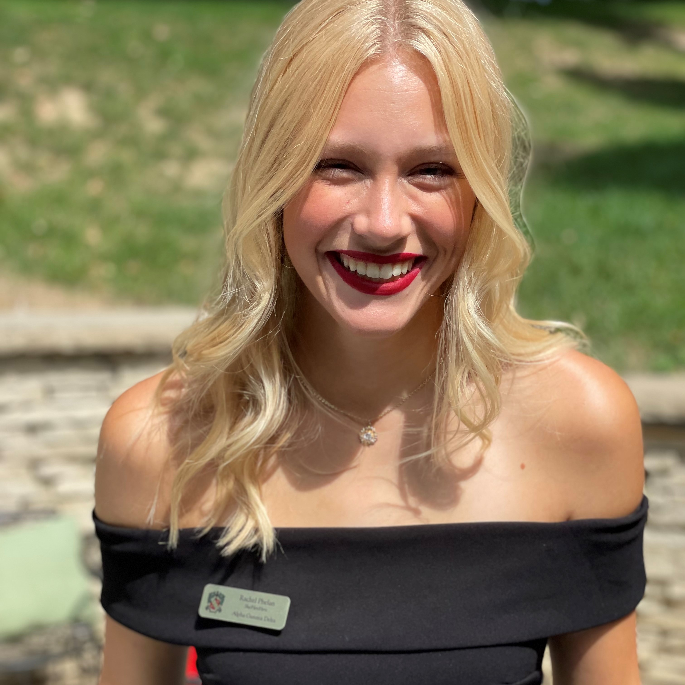I have been an initiated sister of TBS since spring 2021. I am a Biomedical Health Sciences major on a Pre-Physicians Assistant track. Long story short, I want to be a surgeon’s assistant haha. I am a sophomore at Purdue and am also a part of the Big Ten Flags in the All-American Marching Band. I am a part of the Spice Rack family with my big sister being Aden Sinks and my twin being Colin Mast. |
Rachel Rieck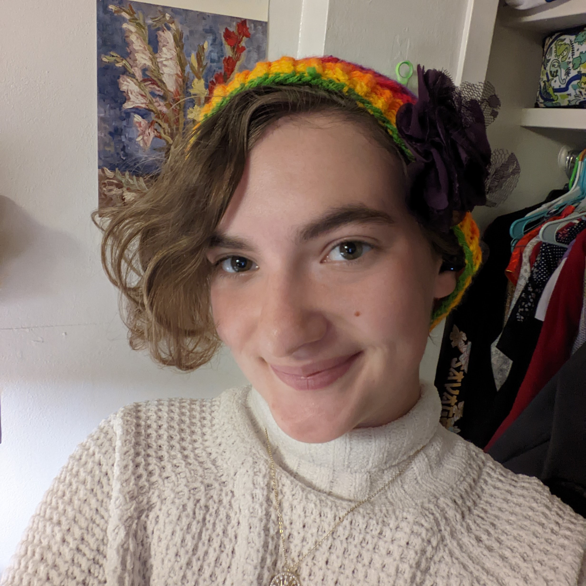Rachel is a Brain and Behavioral Science major from Richmond Kentucky. After graduation, she wants to study Autism and ADHD. She plays clarinet and would like to audition to be a jazz singer at least once before she graduates. Rachel loves flowers and you can always find her on campus by looking for a flower in her hair. If you see her on campus say hi and she would love to chat as long as she isn't running late to class. |
Rachel Riley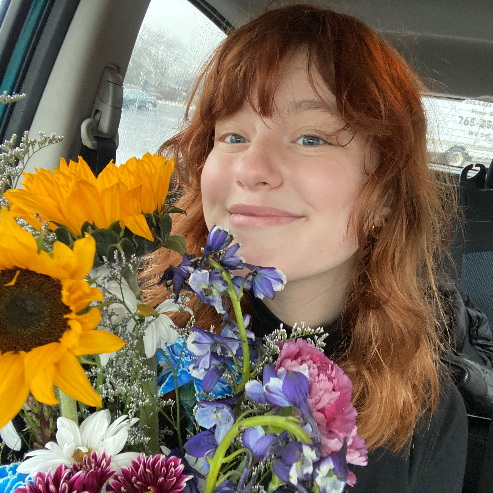I am a Brain and Behavioral Major minoring in English and ASL/Deaf studies. I play clarinet in the concert bands in the spring and have the honor to march Rutgers for the Big Ten Flags with the AAMB. I am member of the Haiku* class and apart of the Goat family! After Purdue I hope to find a place within psychology that allows for me to help others, either through research or therapy! Outside of school I am a fond enjoyer of friends, art, exercising, outside, and much much more :)! |
Reagan Moore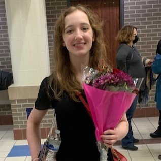I am sophomore studying Pharmacy with a minor in Spanish at Purdue. I am a member of the Haiku* class and the Cowbell family. I'm a Bb clarinetist and I am currently in the Symphonic Band. I am part of some pharmacy clubs like Pre Pharmacy Club, Worldhealth, and SNPHA. I enjoy hanging out with my friends, baking, and making crafts! |
Roxanne Schwab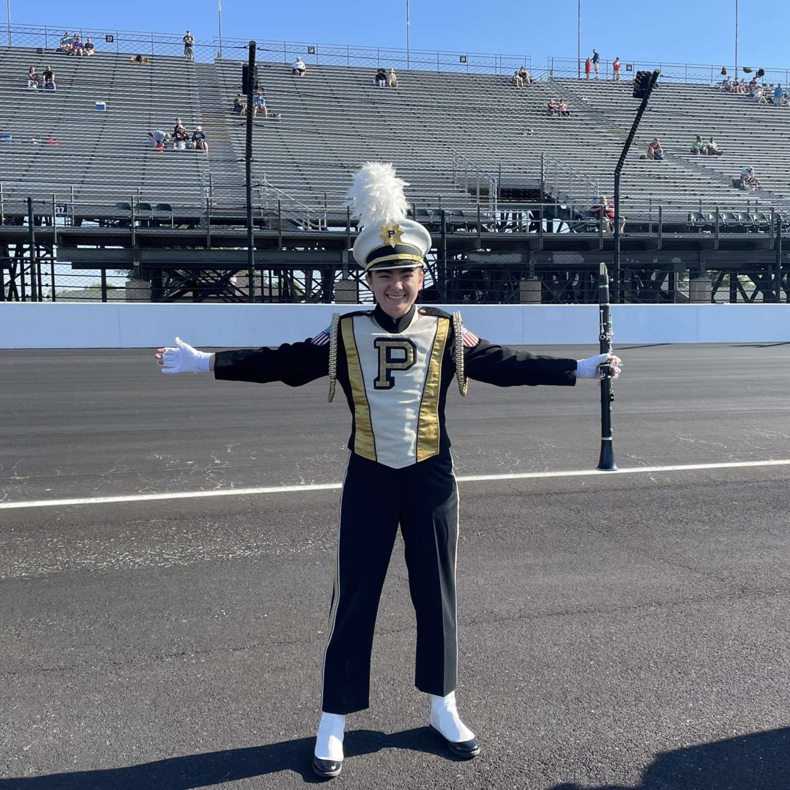I am a clarinet player in the All-American Marching Band and I absolutely love it! I am also double majoring in Kinesiology and German and I hope to be a physical therapist in Germany some day. My favorite things in band are all of the fun trips that we get to take, like the trip to Ireland or the bowl games. |
Samuel Reusze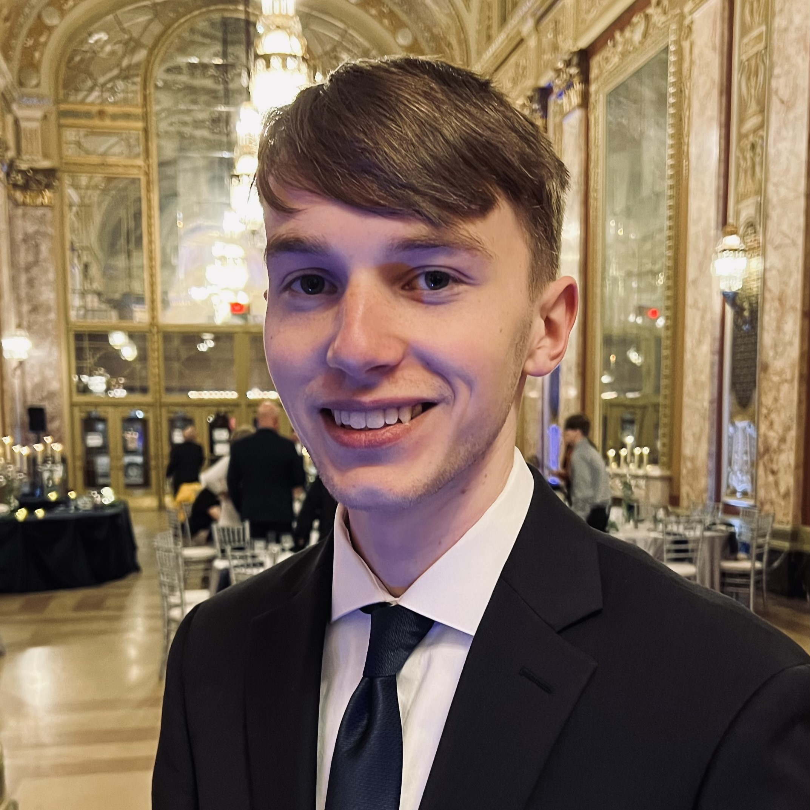Sam is a junior euphonium player from Fishers, IN working on a dual degree in Animation/Media & Mass Communication as well as a minor in English. He is a member of the Haiku* class of 2023 and a part of the Mohtin Goats family in TBS. Besides playing in concert bands, Sam plays with the Boiler Box Band, Gold and Black Sound, and the graduation commencement band whenever possible. After graduation, he hopes to work in the field of content production. He also enjoys playing piano, being hypercritical of movies, and hanging with his fellow sisters. |
Sara MillerSara is a sophomore from Lansing, MI who is studying Ecology, Evolution, and Environment and also pursuing a Soil Sciences minor. She is a Member of the Fruit Salad class and is also in the Mountain Goat family. Sara is a Clarinet SL in the All-American Marching Band and also plays clarinet in Boiler Box Band. After Purdue, Sara would love to pursue a research based career, studying ecosystems and potential life in uninhabitable areas. Outside of school, Sara enjoys spending time with friends, being outside, art, music, movies, and breakfast food :) |
Simon Leonard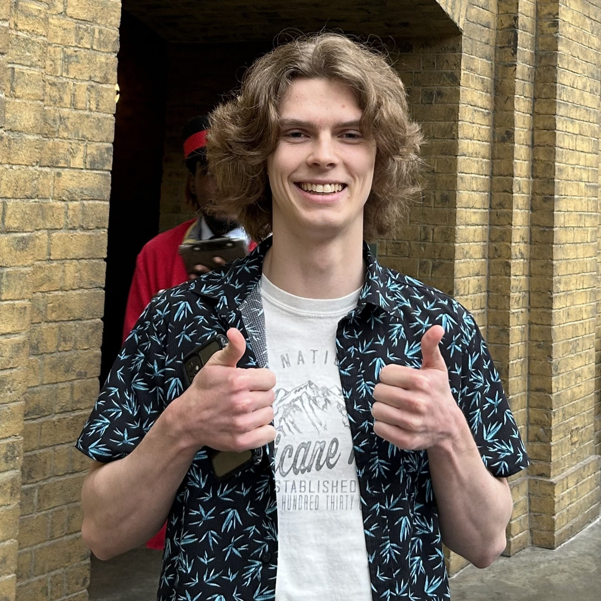Simon is a Junior from Wheaton, IL studying Mechanical Engineering. He is a part of the Haiku* membership class and the Mohtin Goat family. He plays cello in the Purdue Philharmonic Orchestra as well as the bass guitar and clarinet. After graduating Simon hopes to work in the motorsports industry. Outside of school he enjoys rock climbing, playing video games, watching Formula 1, and playing Dungeons and Dragons. |
Zach CurleZach is a junior clarinet player in Aeronautical and Astronautical engineering and is from Cumming, Georgia. He is a member of the Fruit Salad (Yummy Yummy) 2022 candidate class and is in the velvet bowties family. He is a member in the AAMB, Boiler Box Band, and Gold and Black Sound, along with other concert bands. Zach is a member of the operations VMT and is also pursuing a private pilots license. Outside of the classroom, he enjoys getting dinner and playing video games with friends. |